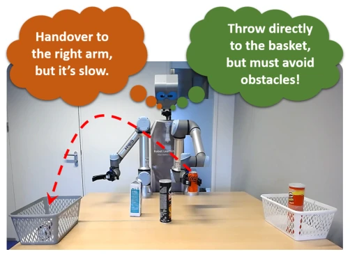
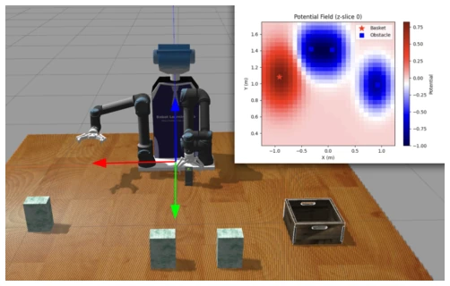
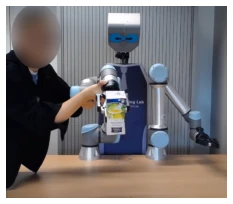
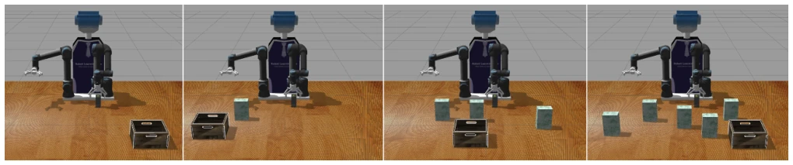
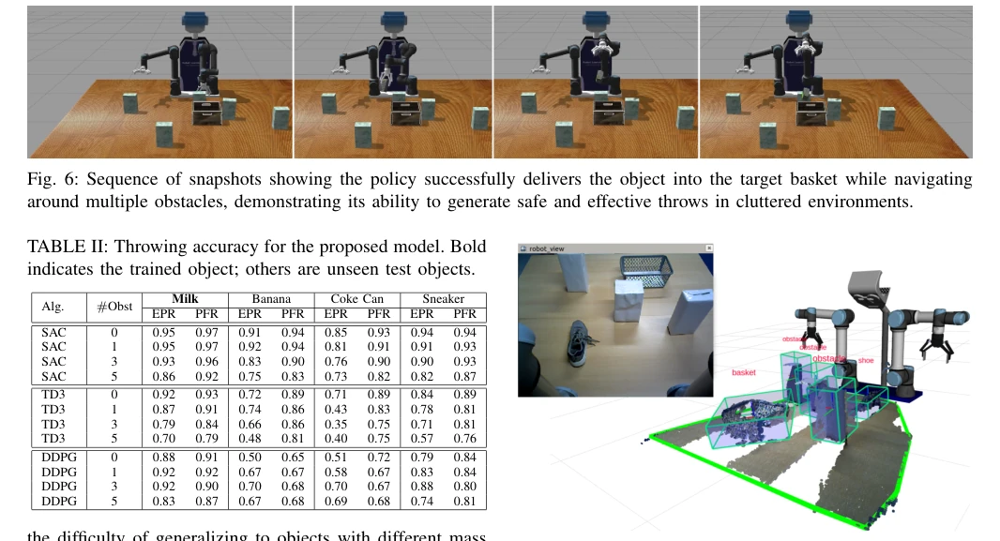
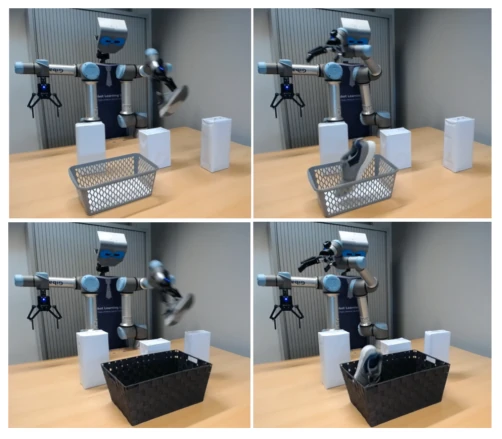

This paper attempts to address the most challenging "order out of chaos" problem in robot throwing. The PFR design is indeed ingenious, using a fixed grid to encode obstacle repulsion and target attraction forces, avoiding the issue of explicit state expansion with the number of obstacles, which outperforms TossingBot [3]. The SAC algorithm performs robustly, and the 90% success rate on real hardware is also notable. However, there are also several limitations: relying on kinesthetic teaching initialization, does it count as true "learning from scratch"? The grid resolution of 15x15 is an empirical value, lacking theoretical basis. The real-world success rate is significantly affected by perception errors and grasp stability; the paper admits these failure modes, indicating that robustness still has room for improvement. Overall, it is a practical engineering improvement, but the theoretical depth is moderate, adaptability to dynamic environments is debatable, and the real-world test sample size is small.
In automated logistics, throwing can expand the workspace and improve throughput [2]. However, existing methods mostly assume obstacle-free environments, such as TossingBot [3] relying on visual input but ignoring obstacles. Some work [4] considers single obstacles, but explicit encoding leads to state dimensions growing linearly with the number of obstacles, preventing generalization. Analytical methods [12]-[15] rely on precise dynamic models, making it difficult to cope with real uncertainty. This paper aims to solve safe throwing in multi-obstacle scenarios, using reinforcement learning to enable robots to avoid obstacles while accurately landing in the basket, which is crucial for scenarios such as warehouse sorting.

Fig. 1: Overview of our throwing task. The robot must decide between a slow object-handover or a faster throwing action. Since obstacles may block the trajectory, we treat the problem as a Safe Reinforcement Learning challenge, where the goal is to achieve reliable throws while avoiding collisions.
The overall framework is Safe RL. First, a safe initial motion kernel is obtained through Kinesthetic Teaching [6], the RL policy only modulates parameters (initial and final joint values, release time, etc.), avoiding random exploration risks. State representation is the core innovation: comparing Explicit Pose Representation (EPR) and Potential Field Representation (PFR). EPR directly concatenates obstacle coordinates, dimensions increase with obstacles; PFR discretizes the workspace into a fixed grid (e.g., 15x15), the basket generates positive potential, obstacles generate negative potential, encoded by CNN and fused with proprioception. The action space is a 4-dimensional continuous vector. The reward function design balances distance to target and collision, preventing sparse rewards. In addition, training uses SAC, DDPG, TD3 three algorithms for comparison, finally SAC wins. Simulation environment based on Gazebo, real robot uses UR5e, perception system responsible for detecting objects and obstacles. CNN encoder treats the potential field map as single-channel image processing, preserving spatial structure, superior to flattening operations.

Fig. 3: Example of the Potential Field Representation (PFR). The robot’s workspace is discretized into a fixed grid, where the basket generates an attractive potential (red) and obstacles generate repulsive potentials (blue). This yields a structured, fixed-size encoding that generalizes across different numbers of obstacles.

Fig. 2: Kinesthetic teaching of the throwing kernel. A human demonstrator phys- ically guides the robot arm through a throwing motion. This provides a safe initial kernel that bootstraps RL training and avoids unsafe random exploration.
Validated on Gazebo simulation and real UR5e. Compare EPR and PFR, and SAC, TD3, DDPG three algorithms. Metric is throwing success rate. In simulation, SAC+PFR performs best under 3-5 obstacles, generalization to unseen objects (banana, coke can, etc.) effect significantly better than EPR. Ablation experiments show 15x15 grid balances efficiency and accuracy best. In real-world zero-shot transfer tests, PFR reaches 70% in normal basket, 90% in large basket, better than EPR's 60%/70%. Failure reasons include perception error, unstable grasp, and release delay. Dataset includes milk carton, banana, coke can, and sneaker, obstacle count 0-5 random.

Fig. 4: Examples of environment configurations: no obstacles (left), 1 obstacle, 3 obstacles, and 5 obstacles (right). The robot must learn which obstacles block the throwing trajectory and which do not.

Fig. 7: Example output of our real-robot perception system, showing object detection and recognition results.

Fig. 8: Throwing a sneaker object into the basket while avoiding obstacles: (top row) an experiment with a basket size similar to the training phase; (bottom row) an experiment with a basket size 1.5 times larger than the one used during training.